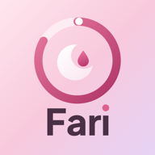
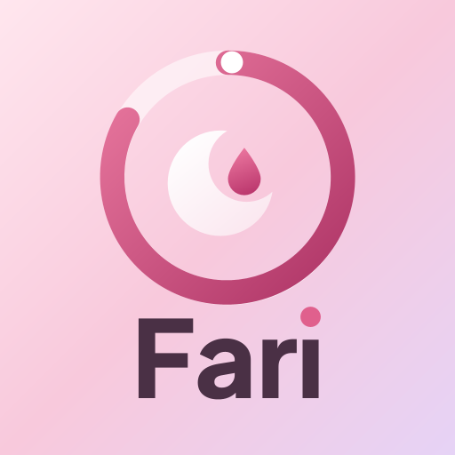

Fari
Your cycle, beautifully private.
Fari asks you to sign in with Google so that only you can open your data on your phone. Fari receives your Google account's name and email address and keeps them encrypted on the device. It does not request access to Gmail, Drive, contacts or any other Google data. Read the privacy policy.
Fari is an Android app (Android 8.0 or later) shared directly as an installable file. If you'd like a copy, contact mohdmatheen@gmail.com.
Fari provides period tracking and general wellness information. It is not a medical device, does not diagnose any condition and is not a method of contraception.